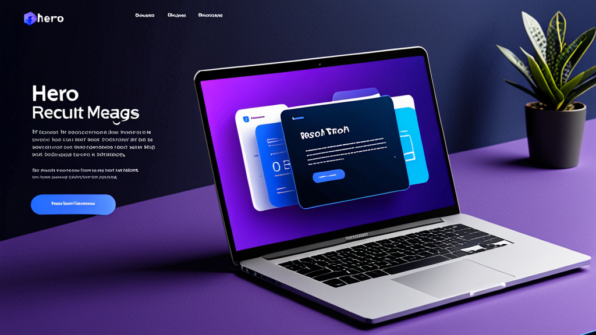

Лучшие AI-инструменты для ответов на рекрутинговые сообщения: руководство рекрутера по эффективному аутричу
Если вы хоть раз потратили больше десяти минут на написание персонализированного сообщения в LinkedIn пассивному кандидату, вы знаете эту боль. Хочется, чтобы текст звучал по-человечески, ссылался на конкретный опыт кандидата и содержал правильный призыв к действию — без случайной подстановки названия не той компании.
Лучшие AI-инструменты для ответов на рекрутинговые сообщения решают именно эту проблему. Они помогают составлять аутрич, который feels персонализированным, а не шаблонным. Но не все инструменты работают одинаково, и умение эффективно их использовать — это разница между тем, чтобы звучать как робот, и тем, чтобы звучать как рекрутер, который действительно подготовился.
В этом руководстве мы разберем, на что обращать внимание при выборе AI-ассистента рекрутера, как использовать его, не теряя своего голоса, и практические советы для повышения отклика.
Почему рекрутерам нужен лучший способ писать сообщения
Рекрутеры отправляют десятки, а иногда и сотни сообщений каждую неделю. Каждое требует переключения контекста: просмотр профиля кандидата, проверка описания вакансии и создание сообщения, которое выделится в переполненном почтовом ящике.
Результат? Многие рекрутеры прибегают к шаблонным заготовкам. Кандидаты замечают это мгновенно. Согласно данным LinkedIn, уровень отклика на InMail составляет в среднем около 20-25% — и этот показатель значительно падает, когда сообщение выглядит как массовая рассылка.
Генератор сообщений для рекрутеров не просто экономит время. Он помогает поддерживать качество при больших объемах. Когда вы можете создать черновик, который учитывает должность кандидата, отрасль и релевантную деталь из его профиля, вероятность получить ответ значительно возрастает.
Что делает лучшие AI-инструменты для ответов на рекрутинговые сообщения?
Не каждый AI-инструмент для написания текстов создан для рекрутинга. Прежде чем выбрать, обратите внимание на следующее:
1. Понимание контекста
Инструмент должен понимать, кто вы, кто кандидат и на какую роль вы ищете. Универсальные AI-чаты, не учитывающие контекст, будут выдавать размытые и непригодные черновики.
2. Контроль тона
У вас должна быть возможность регулировать тон: от профессионального и формального до casual и прямого. Инструмент для аутрича кандидатам, который пишет только в одном стиле, не подойдет для разных ролей и отраслей.
3. Интеграция с платформами
Лучшие инструменты работают там, где вы уже находитесь: LinkedIn Recruiter, Greenhouse, Lever, Workday. Необходимость копировать и вставлять между вкладками сводит на нет смысл автоматизации.
4. Конфиденциальность и контроль
Вы никогда не должны беспокоиться о том, что ваш API-ключ будет раскрыт или сообщения отправятся автоматически. Лучшие AI-инструменты для ответов на рекрутинговые сообщения дают вам полный контроль над отправкой и хранят ваши данные локально.
Как использовать AI-ассистента рекрутера, не звуча как AI
Даже лучший инструмент может выдавать неестественный текст, если не направлять его. Вот как сохранить человеческое тепло:
Начинайте с качественного промпта
Не нажимайте просто «сгенерировать». Передайте инструменту конкретные детали:
- Текущая должность и компания кандидата
- Конкретный проект или достижение из его профиля
- Почему эта роль релевантна его карьерному пути
Пример промпта:
«Напиши короткое сообщение в LinkedIn Senior Product Manager из Spotify. Упомяни их работу над персонализацией функций. Роль — Product Lead в финтех-стартапе на стадии Series B. Тон: дружелюбный, но профессиональный.»
Редактируйте результат
Всегда читайте черновик перед отправкой. Убирайте фразы, которые звучат неестественно. Добавляйте личный вопрос или наблюдение, которое заметили только вы. AI — это отправная точка, а ваш голос завершает сообщение.
Используйте разные шаблоны для разных этапов
Сообщение для холодного аутрича не должно звучать как отказ. AI-ассистент рекрутера должен позволять переключаться между:
- Первичный аутрич
- Напоминание (если нет ответа)
- Приглашение на собеседование
- Отказ или обновление статуса
Каждый этап требует разного тона и степени детализации.
Практические примеры: до и после использования AI
Давайте посмотрим на реальные сценарии, где AI-инструмент улучшает сообщение.
Холодный аутрич
До (шаблонный вариант):
«Привет, [Имя], я наткнулся на ваш профиль и думаю, что вы отлично подойдете на роль в нашей компании. Дайте знать, если заинтересованы.»
После (с AI-ассистентом рекрутера):
«Привет, Сара! Меня зацепила ваша работа над удержанием пользователей в HubSpot — особенно кампания, которая снизила отток на 12%. Мы собираем похожую growth-команду в компании на стадии Series A, и нам бы пригодился ваш опыт. Не против созвониться на этой неделе на пару минут?»
Второе сообщение ссылается на конкретную работу, показывает, что вы изучили профиль, и задает четкий вопрос. Это разница между удалением и ответом.
Напоминание
До:
«Просто напоминаю о своем предыдущем сообщении. Дайте знать, если заинтересованы.»
После:
«Привет, Сара! Понимаю, что вы заняты, поэтому буду краток. Если сейчас не время — без проблем. Но если интересно узнать о роли подробнее, с радостью расскажу. В любом случае, спасибо, что уделили внимание.»
Это напоминание учитывает время кандидата и снимает давление, что часто приводит к ответу.
Советы для повышения отклика кандидатов
Использование лучших AI-инструментов для ответов на рекрутинговые сообщения — это только часть уравнения. Вот дополнительные стратегии для улучшения аутрича:
Персонализируйте за пределами профиля
Упомяните что-то из их недавнего поста, общего знакомого или конференцию, на которой они были. AI не всегда может уловить эти нюансы — добавляйте их вручную.
Будьте кратки
Кандидаты читают сообщения с мобильных. Стремитесь к 3-5 предложениям максимум. Если черновик AI длиннее — сократите его.
Предлагайте действие с низким порогом входа
Вместо «Можем назначить звонок?» попробуйте «Могу скинуть описание вакансии, если интересно». Меньше обязательств = больше откликов.
Используйте понятную тему письма (для email)
Если вы работаете через ATS вроде Greenhouse или Lever, сообщение может попасть в почтовый ящик. Используйте тему вроде «Вопрос о вашем опыте в [Компания]», а не «Предложение работы».
Почему автоматизация рекрутинга все равно должна быть человечной
Некоторые рекрутеры беспокоятся, что использование AI делает их менее аутентичными. На самом деле все наоборот. Когда вы автоматизируете повторяющиеся части написания текстов, вы освобождаете умственную энергию для того, что действительно важно: изучения профиля кандидата, оценки его соответствия и построения доверия.
Инструмент автоматизации рекрутинга должен заниматься набором текста, а не мышлением. Лучшие инструменты уважают эту границу.
Как выбрать подходящий инструмент для вашего рабочего процесса
Если вы оцениваете варианты, подумайте, как инструмент вписывается в вашу повседневную рутину. Вы проводите большую часть времени в LinkedIn Recruiter? Или живете внутри ATS вроде Workday или Lever? Лучшие AI-инструменты для ответов на рекрутинговые сообщения бесшовно интегрируются в ваш существующий workflow, а не являются отдельным приложением, которое нужно не забыть открыть.
Также обратите внимание на безопасность. Если ваша организация работает с конфиденциальными данными кандидатов, вам нужен инструмент, который обрабатывает информацию локально и не хранит сообщения на внешних серверах. Дизайн, ориентированный на конфиденциальность, важнее ярких функций.
Один из инструментов, который соответствует этим критериям — RecruitReply AI. Он работает внутри LinkedIn Recruiter и основных ATS-платформ, использует AI на устройстве и никогда не отправляет сообщения автоматически. Но независимо от того, какой инструмент вы выберете, принципы из этого руководства применимы к любому из них.
Заключение
Лучшие AI-инструменты для ответов на рекрутинговые сообщения не заменяют рекрутеров. Они устраняют трение. Когда вы можете сгенерировать персонализированный, человечный черновик за секунды, вы отправляете лучшие сообщения, более стабильно и с меньшими усилиями.
Это приводит к более высокому уровню отклика, лучшим отношениям с кандидатами и большему времени на стратегические аспекты рекрутинга, которые действительно важны.
Если вы готовы попробовать инструмент, который уважает ваш рабочий процесс и конфиденциальность кандидатов, загляните в RecruitReply AI. Он создан для рекрутеров, которые хотят писать лучшие сообщения — быстрее — не теряя своего голоса.